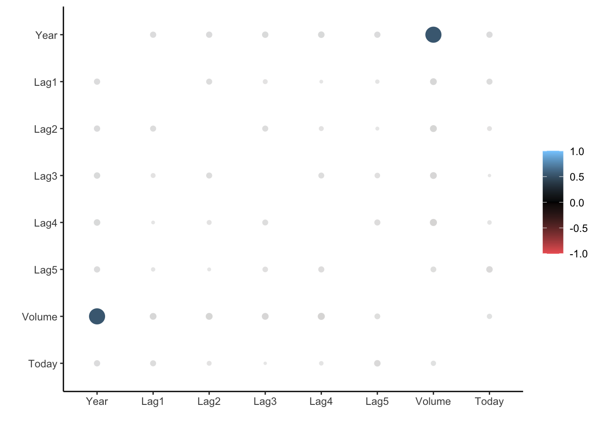
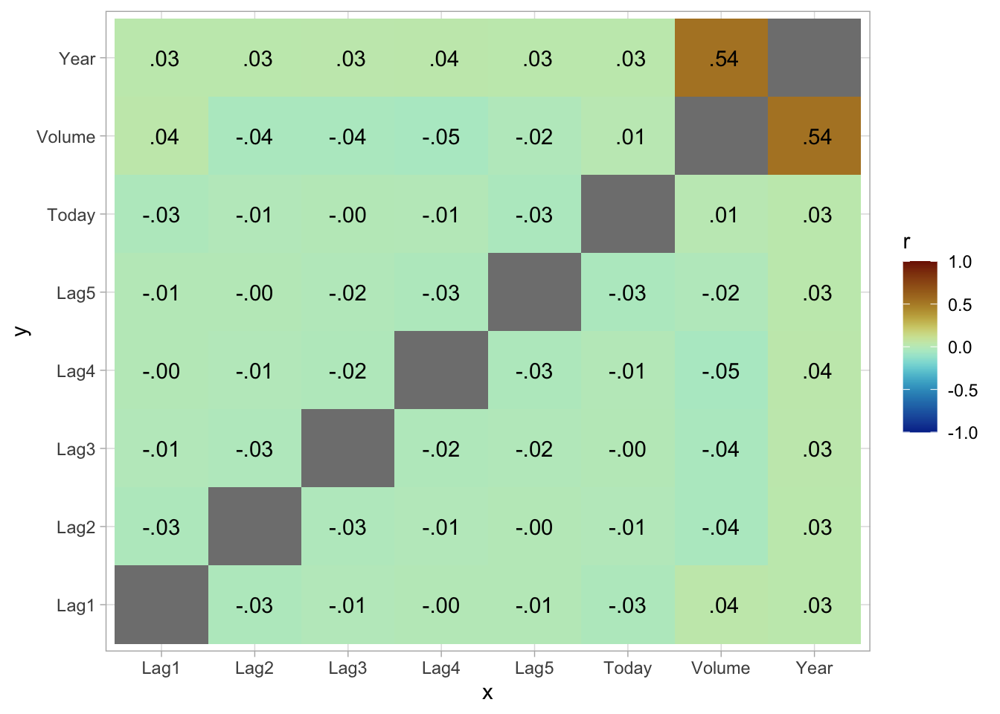
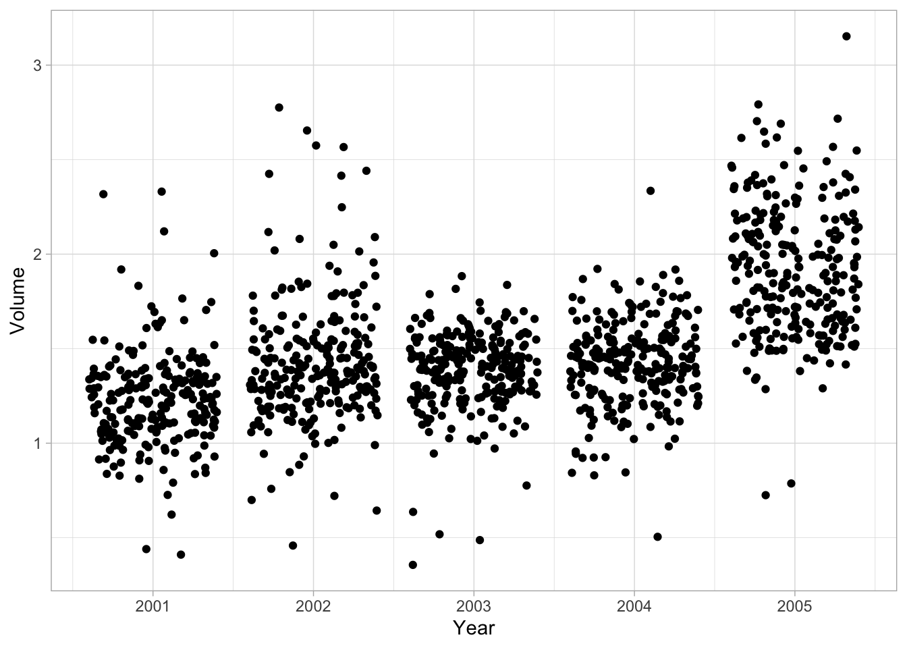
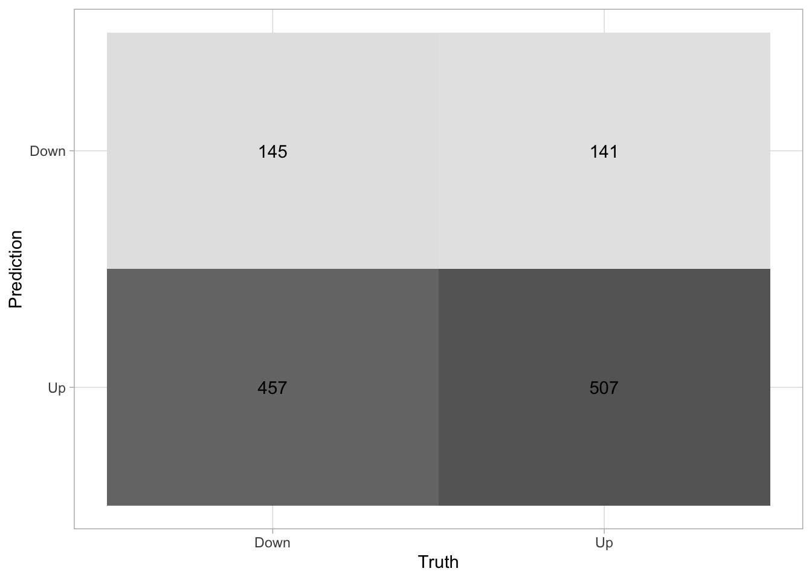
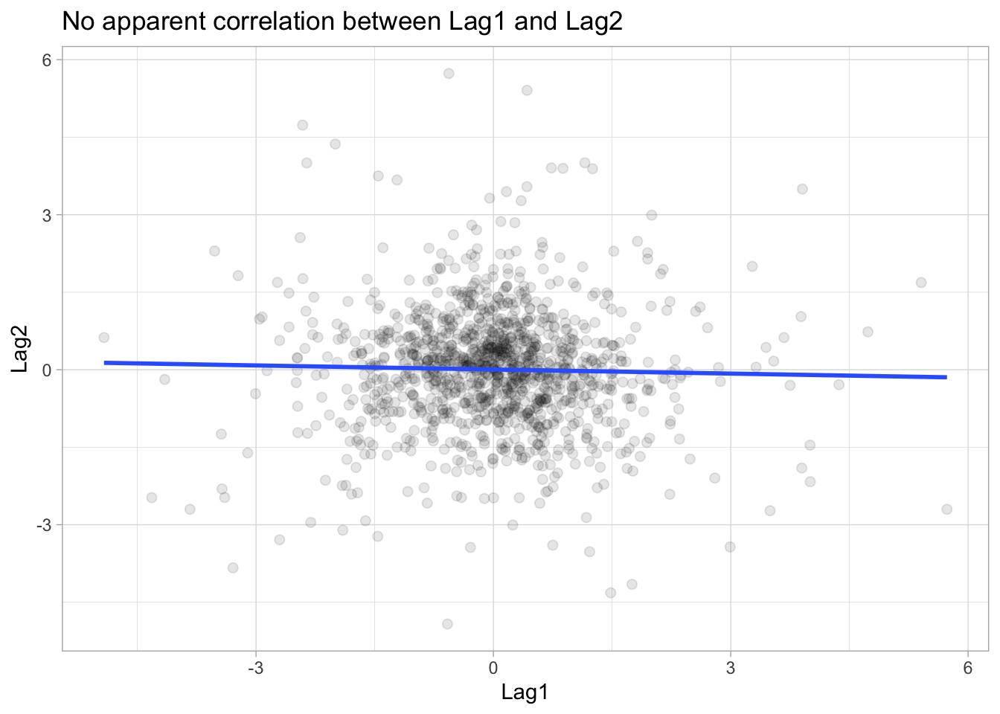
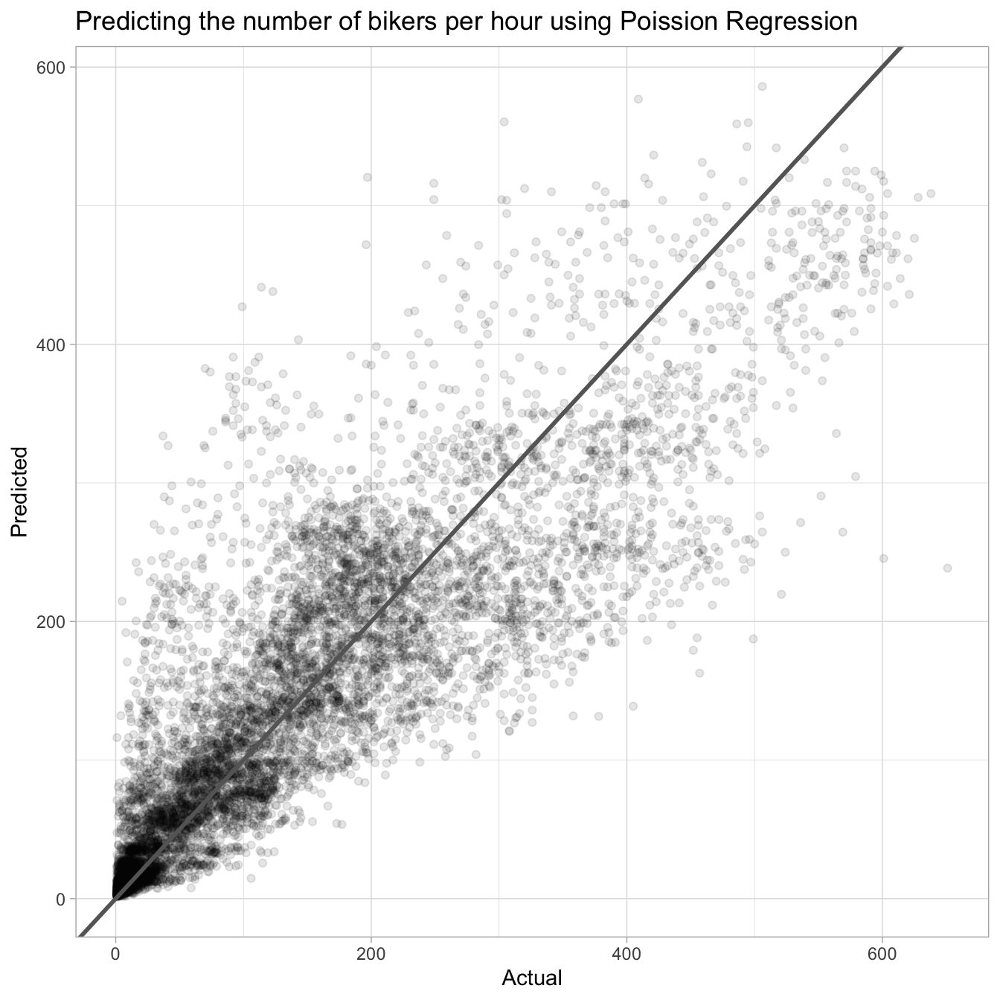
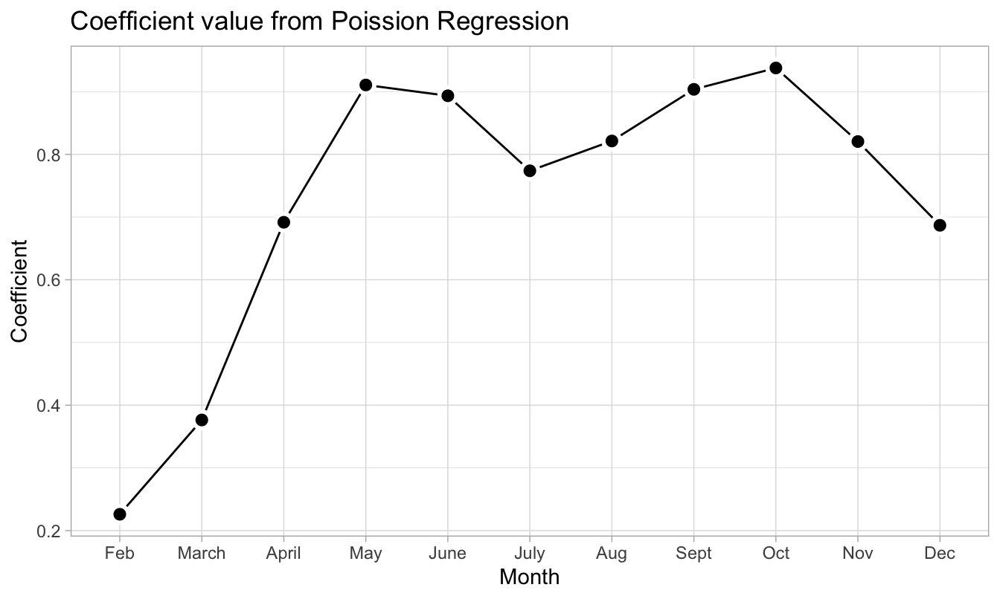
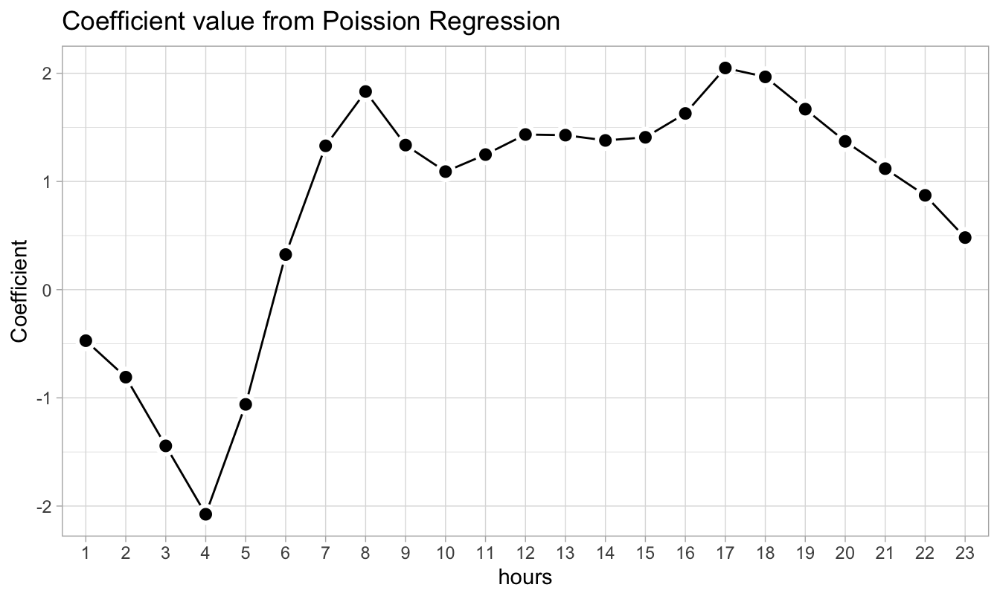

library(tidymodels)
library(ISLR) # For the Smarket data set
library(ISLR2) # For the Bikeshare data set
library(discrim)
library(poissonreg)4 Classification
This lab will be our first experience with classification models. These models differ from the regression model we saw in the last chapter by the fact that the response variable is a qualitative variable instead of a continuous variable. This chapter will use parsnip for model fitting and recipes and workflows to perform the transformations.
4.1 The Stock Market Data
We load the tidymodels for modeling functions, ISLR and ISLR2 for data sets, discrim to give us access to discriminant analysis models such as LDA and QDA as well as the Naive Bayes model and poissonreg for Poisson Regression.
We will be examining the Smarket data set for this lab. It contains a number of numeric variables plus a variable called Direction which has the two labels "Up" and "Down". Before we do on to modeling, let us take a look at the correlation between the variables.
To look at the correlation, we will use the corrr package. The correlate() function will calculate the correlation matrix between all the variables that it is being fed. We will therefore remove Direction as it is not numeric. Then we pass that to rplot() to quickly visualize the correlation matrix. I have also changed the colours argument to better see what is going on.
Correlation computed with
• Method: 'pearson'
• Missing treated using: 'pairwise.complete.obs'
And we see that these variables are more or less uncorrelated with each other. The other pair is Year and Volume that is a little correlated.
If you want to create heatmap styled correlation chart you can also create it manually.
library(paletteer)
cor_Smarket %>%
stretch() %>%
ggplot(aes(x, y, fill = r)) +
geom_tile() +
geom_text(aes(label = as.character(fashion(r)))) +
scale_fill_paletteer_c("scico::roma", limits = c(-1, 1), direction = -1)
If we plot Year against Volume we see that there is an upwards trend in Volume with time.
ggplot(Smarket, aes(Year, Volume)) +
geom_jitter(height = 0)
4.2 Logistic Regression
Now we will fit a logistic regression model. We will again use the parsnip package, and we will use logistic_reg() to create a logistic regression model specification.
lr_spec <- logistic_reg() %>%
set_engine("glm") %>%
set_mode("classification")Notice that while I did set the engine and mode, they are just restating the defaults.
We can now fit the model like normal. We want to model the Direction of the stock market based on the percentage return from the 5 previous days plus the volume of shares traded. When fitting a classification with parsnip requires that the response variable is a factor. This is the case for the Smarket data set so we don’t need to do adjustments.
lr_fit <- lr_spec %>%
fit(
Direction ~ Lag1 + Lag2 + Lag3 + Lag4 + Lag5 + Volume,
data = Smarket
)
lr_fitparsnip model object
Call: stats::glm(formula = Direction ~ Lag1 + Lag2 + Lag3 + Lag4 +
Lag5 + Volume, family = stats::binomial, data = data)
Coefficients:
(Intercept) Lag1 Lag2 Lag3 Lag4 Lag5
-0.126000 -0.073074 -0.042301 0.011085 0.009359 0.010313
Volume
0.135441
Degrees of Freedom: 1249 Total (i.e. Null); 1243 Residual
Null Deviance: 1731
Residual Deviance: 1728 AIC: 1742this fit is done using the glm() function, and it comes with a very handy summary() method as well.
Call:
stats::glm(formula = Direction ~ Lag1 + Lag2 + Lag3 + Lag4 +
Lag5 + Volume, family = stats::binomial, data = data)
Coefficients:
Estimate Std. Error z value Pr(>|z|)
(Intercept) -0.126000 0.240736 -0.523 0.601
Lag1 -0.073074 0.050167 -1.457 0.145
Lag2 -0.042301 0.050086 -0.845 0.398
Lag3 0.011085 0.049939 0.222 0.824
Lag4 0.009359 0.049974 0.187 0.851
Lag5 0.010313 0.049511 0.208 0.835
Volume 0.135441 0.158360 0.855 0.392
(Dispersion parameter for binomial family taken to be 1)
Null deviance: 1731.2 on 1249 degrees of freedom
Residual deviance: 1727.6 on 1243 degrees of freedom
AIC: 1741.6
Number of Fisher Scoring iterations: 3This lets us see a couple of different things such as; parameter estimates, standard errors, p-values, and model fit statistics. we can use the tidy() function to extract some of these model attributes for further analysis or presentation.
tidy(lr_fit)# A tibble: 7 × 5
term estimate std.error statistic p.value
<chr> <dbl> <dbl> <dbl> <dbl>
1 (Intercept) -0.126 0.241 -0.523 0.601
2 Lag1 -0.0731 0.0502 -1.46 0.145
3 Lag2 -0.0423 0.0501 -0.845 0.398
4 Lag3 0.0111 0.0499 0.222 0.824
5 Lag4 0.00936 0.0500 0.187 0.851
6 Lag5 0.0103 0.0495 0.208 0.835
7 Volume 0.135 0.158 0.855 0.392Predictions are done much the same way. Here we use the model to predict on the data it was trained on.
predict(lr_fit, new_data = Smarket)# A tibble: 1,250 × 1
.pred_class
<fct>
1 Up
2 Down
3 Down
4 Up
5 Up
6 Up
7 Down
8 Up
9 Up
10 Down
# ℹ 1,240 more rowsThe result is a tibble with a single column .pred_class which will be a factor variable of the same labels as the original training data set.
We can also get back probability predictions, by specifying type = "prob".
predict(lr_fit, new_data = Smarket, type = "prob")# A tibble: 1,250 × 2
.pred_Down .pred_Up
<dbl> <dbl>
1 0.493 0.507
2 0.519 0.481
3 0.519 0.481
4 0.485 0.515
5 0.489 0.511
6 0.493 0.507
7 0.507 0.493
8 0.491 0.509
9 0.482 0.518
10 0.511 0.489
# ℹ 1,240 more rowsnote that we get back a column for each of the classes. This is a little reductive since we could easily calculate the inverse, but once we get to multi-classification models it becomes quite handy.
Using augment() we can add the predictions to the data.frame and then use that to look at model performance metrics. before we calculate the metrics directly, I find it useful to look at the confusion matrix. This will show you how well your predictive model is performing by given a table of predicted values against the true value.
Truth
Prediction Down Up
Down 145 141
Up 457 507A good performing model would ideally have high numbers along the diagonal (up-left to down-right) with small numbers on the off-diagonal. We see here that the model isn’t great, as it tends to predict "Down" as "Up" more often than it should.
if you want a more visual representation of the confusion matrix you can pipe the result of conf_mat() into autoplot() to generate a ggplot2 chart.
augment(lr_fit, new_data = Smarket) %>%
conf_mat(truth = Direction, estimate = .pred_class) %>%
autoplot(type = "heatmap")
We can also calculate various performance metrics. One of the most common metrics is accuracy, which is how often the model predicted correctly as a percentage.
# A tibble: 1 × 3
.metric .estimator .estimate
<chr> <chr> <dbl>
1 accuracy binary 0.522and we see that the accuracy isn’t great either which is obvious already looking at the confusion matrix.
We just fit a model and evaluated it on the same data. This doesn’t give us that much information about the model performance. Let us instead split up the data, train it on some of it and then evaluate it on the other part of the data. Since we are working with some data that has a time component, it is natural to fit the model using the first year’s worth of data and evaluate it on the last year. This would more closely match how such a model would be used in real life.
Now that we have split the data into Smarket_train and Smarket_test we can fit a logistic regression model to Smarket_train and evaluate it on Smarket_test to see how well the model generalizes.
And we will evaluate on the testing data set.
Truth
Prediction Down Up
Down 77 97
Up 34 44# A tibble: 1 × 3
.metric .estimator .estimate
<chr> <chr> <dbl>
1 accuracy binary 0.480We see that this model is not more likely to predict "Down" rather than "Up". Also, note how the model performs worse than the last model. This is expected since we are evaluating on new data.
We recall that the logistic regression model had underwhelming p-values. Let us see what happens if we remove some of the variables that appear not to be helpful we might achieve a more predictive model since the variables that do not have a relationship with the response will cause an increase in variance without a decrease in bias.
lr_fit3 <- lr_spec %>%
fit(
Direction ~ Lag1 + Lag2,
data = Smarket_train
)
augment(lr_fit3, new_data = Smarket_test) %>%
conf_mat(truth = Direction, estimate = .pred_class) Truth
Prediction Down Up
Down 35 35
Up 76 106# A tibble: 1 × 3
.metric .estimator .estimate
<chr> <chr> <dbl>
1 accuracy binary 0.560And we see an increase in performance. The model is still not perfect but it is starting to perform better.
Suppose that we want to predict the returns associated with particular values of Lag1 and Lag2. In particular, we want to predict Direction on a day when Lag1 and Lag2 equal 1.2 and 1.1, respectively, and on a day when they equal 1.5 and −0.8.
For this we start by creating a tibble corresponding to the scenarios we want to predict for
And then we will use predict()
predict(
lr_fit3,
new_data = Smarket_new,
type = "prob"
)# A tibble: 2 × 2
.pred_Down .pred_Up
<dbl> <dbl>
1 0.521 0.479
2 0.504 0.4964.3 Linear Discriminant Analysis
Now we will perform LDA on the Smarket data. We will use the discrim_linear() function to create a LDA specification. We will continue to use 2 predictors for easy comparison.
lda_spec <- discrim_linear() %>%
set_mode("classification") %>%
set_engine("MASS")
lda_fit <- lda_spec %>%
fit(Direction ~ Lag1 + Lag2, data = Smarket_train)
lda_fitparsnip model object
Call:
lda(Direction ~ Lag1 + Lag2, data = data)
Prior probabilities of groups:
Down Up
0.491984 0.508016
Group means:
Lag1 Lag2
Down 0.04279022 0.03389409
Up -0.03954635 -0.03132544
Coefficients of linear discriminants:
LD1
Lag1 -0.6420190
Lag2 -0.5135293One of the things to look for in the LDA output is the group means. We see that there is a slight difference between the means of the two groups. These suggest that there is a tendency for the previous 2 days’ returns to be negative on days when the market increases, and a tendency for the previous day’s returns to be positive on days when the market declines.
Predictions are done just the same as with logistic regression:
predict(lda_fit, new_data = Smarket_test)# A tibble: 252 × 1
.pred_class
<fct>
1 Up
2 Up
3 Up
4 Up
5 Up
6 Up
7 Up
8 Up
9 Up
10 Up
# ℹ 242 more rowspredict(lda_fit, new_data = Smarket_test, type = "prob")# A tibble: 252 × 2
.pred_Down .pred_Up
<dbl> <dbl>
1 0.490 0.510
2 0.479 0.521
3 0.467 0.533
4 0.474 0.526
5 0.493 0.507
6 0.494 0.506
7 0.495 0.505
8 0.487 0.513
9 0.491 0.509
10 0.484 0.516
# ℹ 242 more rowsAnd we can take a look at the performance.
Truth
Prediction Down Up
Down 35 35
Up 76 106# A tibble: 1 × 3
.metric .estimator .estimate
<chr> <chr> <dbl>
1 accuracy binary 0.560And we see no markedly different performance between this model and the logistic regression model.
4.4 Quadratic Discriminant Analysis
We will now fit a QDA model. The discrim_quad() function is used here.
Once we have the model specification fitting the model is just like before.
qda_spec <- discrim_quad() %>%
set_mode("classification") %>%
set_engine("MASS")
qda_fit <- qda_spec %>%
fit(Direction ~ Lag1 + Lag2, data = Smarket_train) Truth
Prediction Down Up
Down 30 20
Up 81 121# A tibble: 1 × 3
.metric .estimator .estimate
<chr> <chr> <dbl>
1 accuracy binary 0.599And we are seeing another increase in accuracy. However this model still rarely predicts "Down". This make it appear that the quadratic form assumed by QDA captures the relationship more clearly.
4.5 Naive Bayes
We will now fit a Naive Bayes model to the Smarket data. For this, we will be using the naive_Bayes() function to create the specification and also set the usekernel argument to FALSE. This means that we are assuming that the predictors Lag1 and Lag2 are drawn from Gaussian distributions.
Once the model is specified, the fitting process is exactly like before:
nb_spec <- naive_Bayes() %>%
set_mode("classification") %>%
set_engine("klaR") %>%
set_args(usekernel = FALSE)
nb_fit <- nb_spec %>%
fit(Direction ~ Lag1 + Lag2, data = Smarket_train)Once the model is fit, we can create the confusion matrix based on the testing data and also assess the model accuracy.
Truth
Prediction Down Up
Down 28 20
Up 83 121# A tibble: 1 × 3
.metric .estimator .estimate
<chr> <chr> <dbl>
1 accuracy binary 0.591The accuracy of the Naive Bayes is very similar to that of the QDA model. This seems reasonable since the below scatter plot shows that there is no apparent relationship between Lag1 vs Lag2 and thus the Naive Bayes’ assumption of independently distributed predictors is not unreasonable.
ggplot(Smarket, aes(Lag1, Lag2)) +
geom_point(alpha = 0.1, size = 2) +
geom_smooth(method = "lm", se = FALSE) +
labs(title = "No apparent correlation between Lag1 and Lag2")
4.6 K-Nearest Neighbors
Lastly let us take a look at a K-Nearest Neighbors model. This is the first model we have looked at that has a hyperparameter we need to specify. I have set it to 3 with neighbors = 3. Fitting is done like normal.
knn_spec <- nearest_neighbor(neighbors = 3) %>%
set_mode("classification") %>%
set_engine("kknn")
knn_fit <- knn_spec %>%
fit(Direction ~ Lag1 + Lag2, data = Smarket_train)
knn_fitparsnip model object
Call:
kknn::train.kknn(formula = Direction ~ Lag1 + Lag2, data = data, ks = min_rows(3, data, 5))
Type of response variable: nominal
Minimal misclassification: 0.492986
Best kernel: optimal
Best k: 3And evaluation is done the same way:
Truth
Prediction Down Up
Down 43 58
Up 68 83# A tibble: 1 × 3
.metric .estimator .estimate
<chr> <chr> <dbl>
1 accuracy binary 0.5It appears that this model is not performing that well.
We will try using a K-nearest neighbors model in an application to caravan insurance data. This data set includes 85 predictors that measure demographic characteristics for 5822 individuals. The response variable is Purchase, which indicates whether or not a given individual purchases a caravan insurance policy. In this data set, only 6% of people purchased caravan insurance.
We want to build a predictive model that uses the demographic characteristics to predict whether an individual is going to purchase a caravan insurance. Before we go on, we split the data set into a training data set and testing data set. (This is a not the proper way this should be done. See next chapter for the correct way.)
Since we are using a K-nearest neighbor model, it is importance that the variables are centered and scaled to make sure that the variables have a uniform influence. We can accomplish this transformation with step_normalize(), which does centering and scaling in one go.
rec_spec <- recipe(Purchase ~ ., data = Caravan_train) %>%
step_normalize(all_numeric_predictors())We will be trying different values of K to see how the number of neighbors affect the model performance. A workflow object is created, with just the recipe added.
Caravan_wf <- workflow() %>%
add_recipe(rec_spec)Next we create a general KNN model specification.
knn_spec <- nearest_neighbor() %>%
set_mode("classification") %>%
set_engine("kknn")We can then use this model specification along with Caravan_wf to create 3 full workflow objects for K = 1,3,5.
With all these workflow specification we can fit all the models one by one.
And we can calculate all the confusion matrices.
Truth
Prediction No Yes
No 874 50
Yes 67 9 Truth
Prediction No Yes
No 875 50
Yes 66 9 Truth
Prediction No Yes
No 874 50
Yes 67 9And it appears that the model performance doesn’t change much when changing from 1 to 5.
4.7 Poisson Regression
So far we have been using the Smarket data set to predict the stock price movement. We will now shift to a new data set, Bikeshare, and look at the number of bike rentals per hour in Washington, D.C.
The variable of interest, number of bike rentals per hour, can take on non-negative integer values. This makes Poisson Regression a suitable candidate to model the same.
We start with specifying the model using the poisson_reg() function.
pois_spec <- poisson_reg() %>%
set_mode("regression") %>%
set_engine("glm")Here we will be predicting bikers using the following predictors:
mnth- month of the year, coded as a factorhr- hour of the day, coded as a factor from 0 to 23workingday- Is it a workday? Already coded as a dummy variable with Yes = 1, No = 0temp- normalized temperature in Celsius-
weathersit- weather condition, again coded as a factor with the following levels:- clear
- cloudy/misty
- light rain/snow
- heavy rain/snow
As we can see, apart from temp all other predictors are categorical in nature. Thus, we will first create a recipe to convert these into dummy variables and then bundle the model spec and recipe using a workflow.
pois_rec_spec <- recipe(
bikers ~ mnth + hr + workingday + temp + weathersit,
data = Bikeshare
) %>%
step_dummy(all_nominal_predictors())With the workflow in place, we follow the same pattern to fit the model and look at the predictions.
pois_fit <- pois_wf %>% fit(data = Bikeshare)
augment(pois_fit, new_data = Bikeshare, type.predict = "response") %>%
ggplot(aes(bikers, .pred)) +
geom_point(alpha = 0.1) +
geom_abline(slope = 1, size = 1, color = "grey40") +
labs(title = "Predicting the number of bikers per hour using Poission Regression",
x = "Actual", y = "Predicted")Warning: Using `size` aesthetic for lines was deprecated in ggplot2 3.4.0.
ℹ Please use `linewidth` instead.
We can also look at the model coefficients to get a feel for the working of the model and comparing it with our own understanding.
Looking at the coefficients corresponding to the mnth variable, we note that it is lower in the winter months and higher in the summer months. This seems logical as we would expect the number of bike rentals to be higher during summertime.
pois_fit_coef_mnths <-
tidy(pois_fit) %>%
filter(grepl("^mnth", term)) %>%
mutate(
term = stringr::str_replace(term, "mnth_", ""),
term = forcats::fct_inorder(term)
)
pois_fit_coef_mnths %>%
ggplot(aes(term, estimate)) +
geom_line(group = 1) +
geom_point(shape = 21, size = 3, stroke = 1.5,
fill = "black", color = "white") +
labs(title = "Coefficient value from Poission Regression",
x = "Month", y = "Coefficient")
We can similarly also look at the coefficients corresponding to the hr variable. Here the peaks occur at 8:00 AM and 5:00 PM, i.e. during normal office start and end times.
pois_fit_coef_hr <-
tidy(pois_fit) %>%
filter(grepl("^hr", term)) %>%
mutate(
term = stringr::str_replace(term, "hr_X", ""),
term = forcats::fct_inorder(term)
)
pois_fit_coef_hr %>%
ggplot(aes(term, estimate)) +
geom_line(group = 1) +
geom_point(shape = 21, size = 3, stroke = 1.5,
fill = "black", color = "white") +
labs(title = "Coefficient value from Poission Regression",
x = "hours", y = "Coefficient")
4.8 Extra - comparing multiple models
This section is new and not part of ISLR. We have fitted a lot of different models in this lab. And we were able to calculate the performance metrics one by one, but it is not ideal if we want to compare the different models. Below is an example of how you can more conveniently calculate performance metrics for multiple models at the same time.
Start of by creating a named list of the fitted models you want to evaluate. I have made sure only to include models that were fitted on the same parameters to make it easier to compare them.
models <- list("logistic regression" = lr_fit3,
"LDA" = lda_fit,
"QDA" = qda_fit,
"KNN" = knn_fit)Next use imap_dfr() from the purrr package to apply augment() to each of the models using the testing data set. .id = "model" creates a column named "model" that is added to the resulting tibble using the names of models.
preds <- imap_dfr(models, augment,
new_data = Smarket_test, .id = "model")
preds %>%
select(model, Direction, .pred_class, .pred_Down, .pred_Up)# A tibble: 1,008 × 5
model Direction .pred_class .pred_Down .pred_Up
<chr> <fct> <fct> <dbl> <dbl>
1 logistic regression Down Up 0.490 0.510
2 logistic regression Down Up 0.479 0.521
3 logistic regression Down Up 0.467 0.533
4 logistic regression Up Up 0.474 0.526
5 logistic regression Down Up 0.493 0.507
6 logistic regression Up Up 0.494 0.506
7 logistic regression Down Up 0.495 0.505
8 logistic regression Up Up 0.487 0.513
9 logistic regression Down Up 0.491 0.509
10 logistic regression Up Up 0.484 0.516
# ℹ 998 more rowsWe have seen how to use accuracy() a lot of times by now, but it is not the only metric to use for classification, and yardstick provides many more. You can combine multiple different metrics together with metric_set()
multi_metric <- metric_set(accuracy, sensitivity, specificity)and then the resulting function can be applied to calculate multiple metrics at the same time. All of the yardstick works with grouped tibbles so by calling group_by(model) we can calculate the metrics for each of the models in one go.
# A tibble: 12 × 4
model .metric .estimator .estimate
<chr> <chr> <chr> <dbl>
1 KNN accuracy binary 0.5
2 LDA accuracy binary 0.560
3 QDA accuracy binary 0.599
4 logistic regression accuracy binary 0.560
5 KNN sensitivity binary 0.387
6 LDA sensitivity binary 0.315
7 QDA sensitivity binary 0.270
8 logistic regression sensitivity binary 0.315
9 KNN specificity binary 0.589
10 LDA specificity binary 0.752
11 QDA specificity binary 0.858
12 logistic regression specificity binary 0.752The same technique can be used to create ROC curves.
Here you can’t see the LDA because it lies perfectly under the logistic regression.